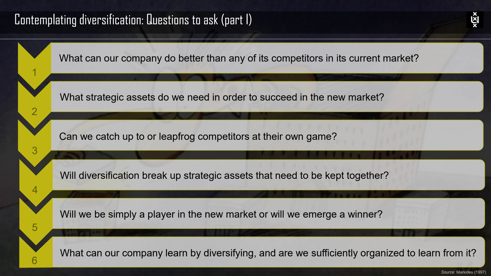

The framework
| Test | Core question | What an answer must establish |
|---|---|---|
| Attractiveness | Is the target area structurally attractive, or can it be made attractive? | A reasoned view of competitive structure rather than growth alone. |
| Cost of entry | Will the full cost of entering absorb the future benefits? | Acquisition or start-up costs plus the resources needed to develop, adapt and integrate. |
| Better-off / added value | Does the new business gain competitive advantage from the corporation, or vice versa? | An identifiable mechanism producing value beyond the businesses' independent performance. |
Key distinctions
Possible mechanisms behind the better-off test
The course discusses operating and investment cost synergies, revenue synergies and financial synergies. In vertical settings, relationship-specific investments, double marginalization and free-riding problems can also matter. The relevant mechanism depends on the relationship between the businesses.
Six questions before diversifying
The lecture also asks what the firm does better than competitors, what strategic assets the new market requires, whether it can catch up or leapfrog, whether entry would break apart assets that need to stay together, whether it can become a winner rather than merely a participant, and what it can learn from the move. Organizational ability to learn is part of the assessment.
How to use it
- Separate evidence for each test instead of treating one strong argument as sufficient.
- Explain how the proposed link creates value and who must act to realize it.
- Compare the proposed scope with feasible alternatives, including remaining independent.
Keep in mind
Attractive demand does not establish a better-off effect. A vague claim of synergy also does not account for coordination and ownership costs.
Why can an attractive acquisition still fail the tests?
Reveal the explanation
Its entry cost can consume the gains, or ownership can fail to create additional competitive advantage.
Read the classroom original
Complete pages from the supplied lecture slides. Select a page to read, enlarge or browse its extracted text. Page numbers refer to the PDF’s physical page order.
